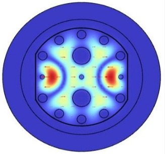
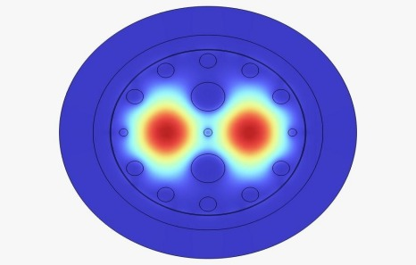
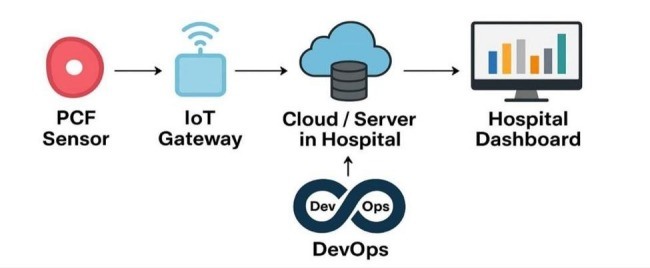

A comprehensive breakdown based on our technical design


The simulation illustrates the cross-section of the Plasmonic PCF. The colored regions indicate the electromagnetic mode field distribution.
Strategically placed circular air holes that lower the refractive index of the cladding, forcing the optical signal to remain confined inside the core region.
The intense red/yellow spots represent the electromagnetic field. This indicates where Surface Plasmon Resonance (SPR) is occurring strongly.
The boundary where the biological sample meets the plasmonic layer. Any change in the sample causes a detectable shift in the resonance.

The data journey from the physical sensor all the way to the doctor's analysis screen.
The physical sensor collects biological shifts, and the Acquisition Unit (ACQ) digitizes these optical shifts into electrical data.
A wireless communication module that receives the digitized data and securely transmits it over the network to the central servers.
The intelligence hub. It stores patient data, applies AI processing, and utilizes DevOps pipelines for continuous integration and updates.
The final user interface (Display & Analysis) where medical staff can view real-time analytics, charts, and early disease alerts.